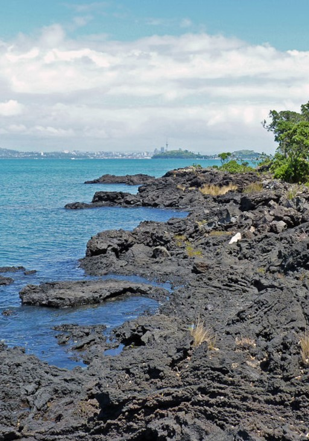

Lake Pupuke, traditionally known in Māori as Pupukemoana is a heart-shaped freshwater lake occupying a volcanic crater (or maar) situated to the east of Westlake Boys High School. The heart shape is a result of its formation by the linking of two circular craters - a larger one forming most of the lake and a smaller one forming the arm in the northeast. Separated from the sea by less than 200 m at one point, it has a circumference of about 4.5 km and reaches 57m in depth. It is popular for recreational activities and the lake front property around it.
Early History
Ngāti Pāoa is descended from Pāoa. According to a Hauraki tradition his father was Rongo-tiu-moe-whara of the East Coast iwi, Ngāti Kahungunu, born at Whai-a-pāoa near Wharekahika. According to Tainui accounts his father was Hekemaru, his paternal grandparents were Pikiao from the Te Arawa tribe, and Rereiao, a high-born Waikato woman descended from Whatihua, and he was the brother of Mahuta, from whom Ngāti Mahuta is descended. On either version, Pāoa lived with his first wife Tauhākari, sons Toapoto and Toawhana, and daughter Koura at Kaitotehe, near Taupiri in the central Waikato. Pāoa moved from Kaitotehe to Hauraki, where he married Tukutuku, a granddaughter of Tamaterā, with whom he had sons, first Haora Tipa Koinaki and second Horowhenua. Pāoa and Tukutuku's children lived in and around the Hauraki Plains. Ngāti Pāoa later spread to the western side of the Firth of Thames, from where they also frequented the Hunua Ranges. By the 1700s they also frequented the Tāmaki (Auckland) isthmus, the North Shore and the eastern and northern Coromandel Peninsula. In about 1780 Ngāti Pāoa established settlements along the western side of the Tamaki River and at Mokoia (present-day Panmure). In 1790 and from 1793 to 1798 they engaged in many battles with tribes to the north, at least as far as the Mahurangi district. By 1805 they were tiring of war and negotiated peace settlements with many neighbouring tribes. At this time they had settlements along the Tamaki River as far as Otahuhu.
Rangitoto Island is a volcanic island in the Hauraki Gulf. The 5.5 km (3.4 mi) wide island is a symmetrical shield volcano cone, reaching a height of 260 m (850 ft). Rangitoto is the youngest and largest of the approximately 50 volcanoes of the Auckland volcanic field, having formed in an eruption about 600 years ago, and covering an area of 2,311 ha (5,710 acres). It is separated from the mainland of Auckland's North Shore by the Rangitoto Channel. Since World War II, it has been linked by a causeway to the much older, non-volcanic Motutapu Island. Rangitoto is Māori for 'Bloody Sky', with the name coming from the full phrase Ngā Rangi-i-totongia-a Tama-te-kapua ("The days of the bleeding of Tama-te-kapua"). Tama-te-kapua was the captain of the Arawa waka (canoe) and was badly wounded on the island, after having lost a battle with the Tainui iwi (tribe) at Islington Bay.

History
Rangitoto was formed during a single phase of eruptions that may have lasted only 5–10 years, about 600 years ago. Previous inferences that it was formed by a series of eruptions commencing at least 6000 years ago have been disproved by the most recent research. The first part of the eruption was wet and produced surges of volcanic ash that mantles neighbouring Motutapu Island. The later part of the eruption was dry and built most of Rangitoto, erupting all the lava flows and scoria cones at the apex. The 2.3 km3 (0.55 cu mi) of material that erupted from the volcano was about equal to the combined mass produced by all the previous eruptions in the Auckland volcanic field, which were spread over more than 200,000 years.
In 2013, scientists from Auckland University said new studies showed Rangitoto had been much more active in the past than previously thought, suggesting it had been active on and off for around 1000 years before the final eruptions around 550 years ago (BP= before 1950). In February 2014 a 150 m (490 ft) deep hole was drilled through the western flank of Rangitoto. The same group of university scientists declared that it revealed a long history of spasmodic eruptions going back at least 6000 years, although the bulk of activity post-dated 650 years. Civil Defence officials said the discovery did not make living in Auckland any more dangerous, but did change their view of how an eruption might proceed. These headline-grabbing results have been controversial and not accepted by all geologists. In 2018, most of the original group of Auckland University geologists reported on their latest research and reinterpretation of the drillhole sequence and pronounced that the island did not erupt off and on prior to its major eruption about 600 years ago and is not a unique polygenetic volcano in the monogenetic Auckland volcanic field, as they had previously inferred. While it is possible that Rangitoto buried one or more smaller volcanoes, to date there is no strong evidence to support this idea.
Subsidence back down the throat during the cooling process has left a moat-like ring around the crater summit, which may be viewed from a path which goes right round the rim and up to the highest point. In some parts of the island, fields of clinker-like black lava stones are exposed, appearing very recent to a casual eye. About 200 metres from the top of the mountain on the eastern side visitors can walk through some of about seven known lava tubes — tubes left behind after the passage of liquid lava. The more accessible of the caves are signposted. Lava tubes are formed when low-viscosity molten lava known as pahoehoe flows and cools on the outside due to contact with the ground and air, to form a hard crust allowing the still-liquid molten lava to continue to flow through inside. At Rangitoto the large tubes are cave-like. A torch is needed to explore the caves. The longest known cave is about 50 m long.
Gallery: Waitematā Harbour


Information source: Wikipedia